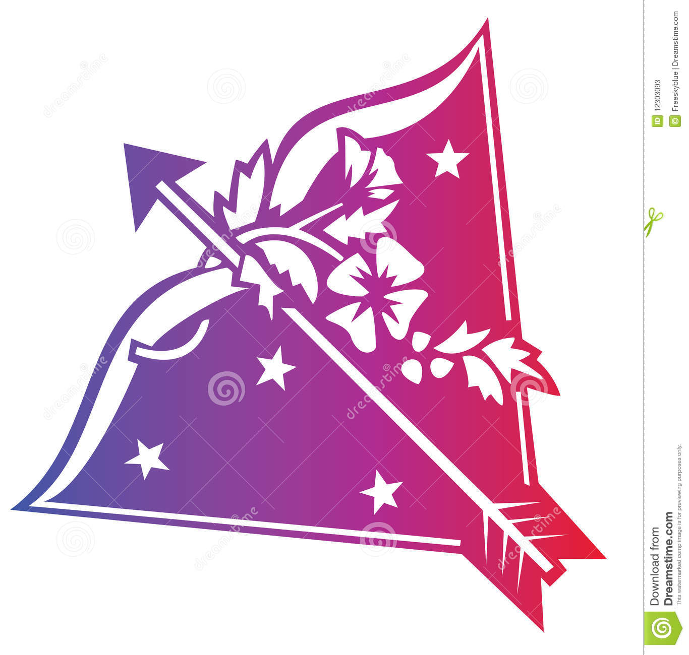

Sagittarius Symbol
The symbol for Sagittarius represents an arrow, that is clear, but there are several different views on it. On one hand, an arrow is our drive, with an important part of this symbol hidden in the cross at the bottom of the arrow. This connects our drive and focus on a certain thing, in a certain direction, with the Earth, challenging the sign for grounding and awareness of what’s real and what isn’t. On the other hand, the symbol was supposed to represent a warrior in a simplified version of his weapon, pointing to our aggressive, animalistic nature.

Sagittarius Ruler
The sign of Sagittarius is ruled by Jupiter, also a planet that is the traditional ruler of Pisces. Jupiter was the Roman god of the sky and thunder, and the king of all gods. He was depicted holding a thunderbolt and his sacred animal is the Eagle (Aquila). The Greek counterpart for this deity was Zeus
Sagittarius Ruler
The symbol for Jupiter represents a thunderbolt or an Eagle. It is also a combination of numbers 2 and 1, giving a final 4 with a crescent on top. The crescent over the cross represents the mind rising above the horizon of matter, while the symbolism of the numbers speaks of the same thing. Number 4 is ruled by Saturn, a deity that had to be overcome by his son in order to be stopped. From another perspective, number 2 overcame number one, meaning that the Moon should come before the Sun, the feminine and tender, before the masculine and fiery. It also hides the saying that two heads are smarter than one, and speaks of all oppositions of the zodiac.